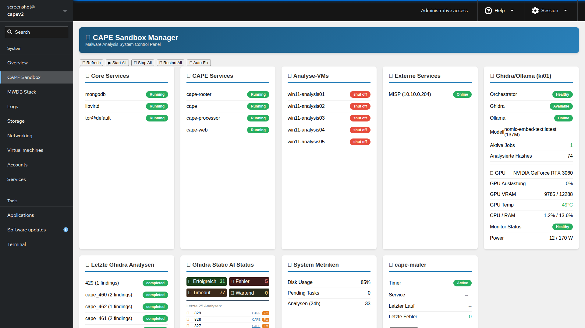
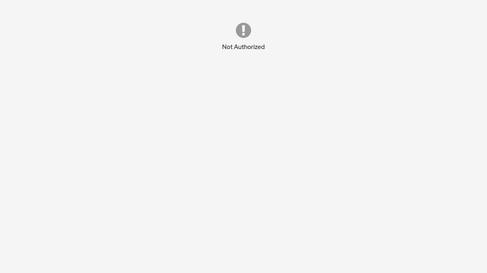

Drei eigene Cockpit-Erweiterungen zur webbasierten Steuerung von CAPE Sandbox, MWDB-Stack und Secret-Scanning – direkt im vorhandenen Server-Admin-Interface.
Teil des IcePorge Malware-Analyse-StacksIcePorge Cockpit Modules erweitert das Cockpit-Webadmin-Interface um drei Plugins, die speziell für den IcePorge-Malware-Analyse-Stack gebaut wurden. Statt separate Dashboards oder SSH-Sessions zu pflegen, laufen Service-Status, VM-Verwaltung, Log-Einsicht, Container-Kontrolle und Secret-Scanning direkt als Menüpunkte im bestehenden Cockpit von Cockpit (Port 9090). Jedes Modul ist eine eigenständige HTML/JS-Anwendung, die über die Cockpit-Bridge lokale Kommandos ausführt und Ergebnisse in Echtzeit im Browser anzeigt.
TruffleHog-Integration zum Scannen von GitHub-Repos, lokalen Git-Repos und Filesystem-Pfaden auf Secrets, inkl. Cron-Scheduler, Scan-Historie und Pushover-Benachrichtigungen.
Status-Übersicht für CAPE-Sandbox-Dienste, VM-Verwaltung via libvirt, Log-Viewer für mehrere Quellen sowie Health-Checks externer Dienste (MISP, Ghidra, Ollama).
Überwachung von MWDB-Core-Services, Karton-Pipeline und Feeder-Status, Übersicht der Feed-Quellen sowie Container-Steuerung (Start/Stop/Restart/Rebuild).
Alle drei Module werden als Cockpit-Plugins (manifest.json + index.html) im Cockpit-Verzeichnis verlinkt und erscheinen als eigene Menüpunkte. Sie führen keine eigenen Server-Prozesse aus, sondern nutzen die im Browser geladene cockpit.js-Bibliothek, um über die Cockpit-Bridge (WebSocket-Session mit optionalem Superuser) Shell-Kommandos auf dem Host auszuführen – etwa systemctl, virsh, docker, journalctl oder curl gegen interne Dienst-Endpunkte.
graph TD
Browser["Admin-Browser"] --> Cockpit["Cockpit Web UI
(Port 9090)"]
Cockpit --> CM["CAPE Manager Modul"]
Cockpit --> MM["MWDB Manager Modul"]
Cockpit --> SS["Security Scanner Modul"]
CM -- "cockpit.spawn()" --> Bridge["Cockpit-Bridge
(Host-Shell, optional superuser)"]
MM -- "cockpit.spawn()" --> Bridge
SS -- "cockpit.spawn()" --> Bridge
Bridge --> Systemd["systemd Services
(cape-mailer, cockpit.socket, ...)"]
Bridge --> Libvirt["libvirt / CAPE-VMs"]
Bridge --> Docker["Docker Container
(MWDB-Core, Karton, Feeder)"]
Bridge --> Logs["Journal- & Dateilogs"]
Bridge --> Trufflehog["TruffleHog CLI"]
Bridge -- "curl (intern)" --> Orchestrator["CAPE / KI-Orchestrator
(Analyse-API, Ollama)"]
Trufflehog --> GitHub["GitHub Repos"]
Trufflehog --> LocalFs["Lokale Repos / Filesystem"]
SS -- "Findings" --> Pushover["Pushover-Benachrichtigung"]
Die Trennung in drei Module hält jede Cockpit-Erweiterung schlank und fokussiert: Der CAPE Manager kümmert sich um Sandbox-Betrieb und angebundene Analyse-Dienste, der MWDB Manager um die Malware-Datenbank samt Verarbeitungspipeline, und der Security Scanner läuft unabhängig davon als eigenständiges Secret-Scanning-Werkzeug für Repositories.
Die Module bringen bereits eigene Screenshots aus dem Repository mit:


Die Module werden als Symlinks in das Cockpit-Plugin-Verzeichnis eingebunden:
git clone https://github.com/icepaule/IcePorge-Cockpit.git
cd IcePorge-Cockpit
# Module in Cockpit-Verzeichnis verlinken
sudo ln -sf "$(pwd)/cape-manager" /usr/share/cockpit/
sudo ln -sf "$(pwd)/mwdb-manager" /usr/share/cockpit/
sudo ln -sf "$(pwd)/security-scanner" /usr/share/cockpit/
# Cockpit neu starten
sudo systemctl restart cockpit.socketcurl -sSfL https://raw.githubusercontent.com/trufflesecurity/trufflehog/main/scripts/install.sh | sh -s -- -b /usr/local/bin
trufflehog --version
sudo touch /var/log/iceporge-security.log
sudo chmod 666 /var/log/iceporge-security.logAnschließend Cockpit unter https://<server>:9090/ öffnen, mit einem Administrator-Account anmelden, „Administrative access" aktivieren (für Docker-Kommandos nötig) und das gewünschte Modul im Menü auswählen.